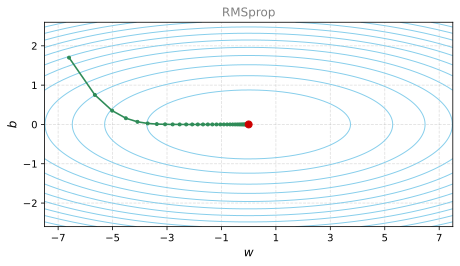
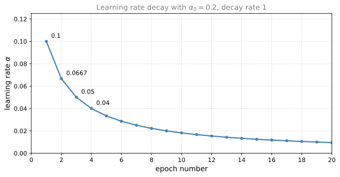
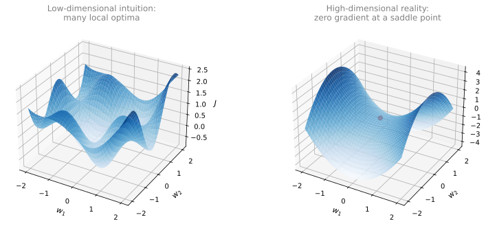

Momentum, RMSprop, and Adam
deep-learning
optimization
momentum
rmsprop
adam
learning-rate
Gradient descent with momentum, RMSprop, the Adam optimizer, learning rate decay schedules, and why saddle points beat local optima.
The previous page built up exponentially weighted averages. This page uses them to construct optimization algorithms that almost always train faster than straightforward mini-batch gradient descent. It covers gradient descent with momentum, RMSprop, and the Adam optimizer that combines them, then looks at learning rate decay and finishes with what the optimization landscape of a neural network actually looks like.
Gradient Descent with Momentum
There is an algorithm called momentum, or gradient descent with momentum, that almost always works faster than the standard gradient descent algorithm. In one sentence, the basic idea is to compute an exponentially weighted average of your gradients, and then use that gradient to update your weights instead. Let us unpack that one-sentence description and see how you can actually implement it.
Say you are trying to optimize a cost function whose contours are long, squashed ellipses, with the minimum at the red dot. Starting gradient descent at one end, one iteration takes you across to the other side of the ellipse, the next iteration takes you back, and so on. Gradient descent takes a lot of steps, slowly oscillating toward the minimum. These up-and-down oscillations slow gradient descent down and prevent you from using a much larger learning rate. If you were to use a much larger learning rate, you might end up overshooting and diverging, so the need to keep the oscillations from getting too big forces you to use a learning rate that is not too large.
Another way of viewing this problem is that on the vertical axis you want learning to be a bit slower, because you do not want those oscillations, while on the horizontal axis you want faster learning, because you want to move aggressively toward the minimum.
Here is what you do with momentum. On each iteration \(t\), compute the usual derivatives \(dW, db\) on the current mini-batch (the layer superscripts \(^{[l]}\) are omitted here). If you are using batch gradient descent, the current mini-batch is just your whole training set, and this works fine as well. Then compute
\[ v_{dW} = \beta\, v_{dW} + (1 - \beta)\, dW, \qquad v_{db} = \beta\, v_{db} + (1 - \beta)\, db \]
This is just like the earlier \(v_\theta = \beta v_\theta + (1 - \beta)\theta_t\), so it is computing a moving average of the derivatives you are getting. Then, instead of updating the parameters with the derivatives themselves, update them with the moving averages,
\[ W := W - \alpha\, v_{dW}, \qquad b := b - \alpha\, v_{db} \]
What this does is smooth out the steps of gradient descent. If you average the last few gradients, the oscillations in the vertical direction average out to something close to zero, since positive and negative steps cancel. In the horizontal direction, all the derivatives point the same way, so the average is still pretty big. After a few iterations, gradient descent with momentum takes steps with much smaller vertical oscillations that move more quickly in the horizontal direction, so the algorithm takes a more straightforward, damped path to the minimum.
One intuition for this momentum, which works for some people but not everyone, is a ball rolling down a bowl. If you are trying to minimize a bowl-shaped function, you can think of the derivative terms as providing acceleration to a little ball rolling downhill, and the momentum terms \(v_{dW}, v_{db}\) as representing its velocity. The ball rolls faster and faster because of the acceleration, while \(\beta\), being a number a little less than one, plays the role of friction and prevents the ball from speeding up without limit. So rather than gradient descent taking every step independently of all previous steps, the little ball can roll downhill and gain momentum. If this analogy does not work for you, do not worry about it.
Implementation Details
You now have two hyperparameters, the learning rate \(\alpha\) and the parameter \(\beta\) that controls the exponentially weighted average. The most common value for \(\beta\) is 0.9. Thinking back to the temperature example, that is averaging over the last ten iterations’ gradients, and in practice \(\beta = 0.9\) works very well. Feel free to try different values and do some hyperparameter search, but 0.9 is a pretty robust value.
What about bias correction, dividing \(v_{dW}\) and \(v_{db}\) by \(1 - \beta^t\)? In practice people do not usually do this, because after just ten iterations the moving average has warmed up and is no longer a biased estimate. Initialize \(v_{dW} = 0\), a matrix of zeros with the same dimension as \(dW\) (and as \(W\)), and \(v_{db} = 0\), a vector of zeros with the same dimension as \(db\) (and as \(b\)).
NoteVersion in the Literature Without the \(1 - \beta\) Term
If you read the literature on gradient descent with momentum, you often see the \(1 - \beta\) term omitted, \[ v_{dW} = \beta\, v_{dW} + dW \] The net effect is that \(v_{dW}\) ends up scaled by a factor of \(\frac{1}{1 - \beta}\), so the learning rate \(\alpha\) just needs to change by a corresponding factor. Both versions work fine. The difference only affects the best value of \(\alpha\). The omitted-term formulation is a little less intuitive, because if you tune \(\beta\), the scaling of \(v_{dW}\) and \(v_{db}\) changes too, and you may need to retune \(\alpha\) as well. For that reason the version with the \(1 - \beta\) term is preferable. Either way, \(\beta = 0.9\) is a common choice of hyperparameter.
Gradient descent with momentum almost always works better than the straightforward gradient descent algorithm without momentum. But there are still other things we can do to speed up the learning algorithm.
Review Questions
1. Write the momentum update equations. Why does averaging the gradients damp the vertical oscillations but not the horizontal progress?
TipAnswer
On each iteration compute \(dW, db\) on the current mini-batch, then \[ v_{dW} = \beta v_{dW} + (1-\beta) dW, \qquad v_{db} = \beta v_{db} + (1-\beta) db \] and update \(W := W - \alpha v_{dW}\), \(b := b - \alpha v_{db}\). In the oscillating (vertical) direction the recent gradients alternate between positive and negative, so their average is close to zero. In the horizontal direction all the gradients point the same way, so the average stays large. The result is smaller oscillations and quicker movement toward the minimum.
1. In the ball-rolling-down-a-bowl analogy, what do the derivative terms, the \(v\) terms, and \(\beta\) each represent?
TipAnswer
The derivatives \(dW, db\) act as the acceleration imparted to the ball, the moving averages \(v_{dW}, v_{db}\) represent the velocity, and \(\beta\), being slightly less than one, acts as friction that prevents the ball from speeding up without limit. Unlike plain gradient descent, where each step is independent of all previous steps, the ball can gain momentum as it rolls downhill.
1. What is the standard value of \(\beta\) for momentum, and why is bias correction usually skipped?
TipAnswer
\(\beta = 0.9\), which averages over roughly the last ten iterations’ gradients and is a robust default. Bias correction (\(v / (1 - \beta^t)\)) is usually skipped because after about ten iterations the moving average has already warmed up and is no longer a biased estimate.
RMSprop
There is another algorithm called RMSprop, which stands for root mean square prop, that can also speed up gradient descent. Recall the example where gradient descent produces huge oscillations in the vertical direction even while making progress horizontally. To build intuition, say the vertical axis is the parameter \(b\) and the horizontal axis is the parameter \(w\) (it could really be \(w_1\) and \(w_2\), but call them \(b\) and \(w\) for the sake of intuition). You want to slow down learning in the \(b\) direction and speed it up, or at least not slow it down, in the \(w\) direction.
On iteration \(t\), RMSprop computes the usual derivatives \(dW, db\) on the current mini-batch, and then keeps an exponentially weighted average, written \(S\) instead of \(v\), of the squares of the derivatives,
\[ S_{dW} = \beta_2\, S_{dW} + (1 - \beta_2)\, dW^{2}, \qquad S_{db} = \beta_2\, S_{db} + (1 - \beta_2)\, db^{2} \]
where the squaring is an elementwise operation. (The hyperparameter is called \(\beta_2\) rather than \(\beta\) so it does not clash with the momentum hyperparameter, since the next section combines the two algorithms.) RMSprop then updates the parameters by dividing the gradient by the square root of this average,
\[ W := W - \alpha\, \frac{dW}{\sqrt{S_{dW}}}, \qquad b := b - \alpha\, \frac{db}{\sqrt{S_{db}}} \]
Here is the intuition. In the horizontal (\(w\)) direction we want learning to go fast, and in the vertical (\(b\)) direction we want to slow down the oscillations. With the terms \(S_{dW}\) and \(S_{db}\), the hope is that \(S_{dW}\) is relatively small, so the horizontal update divides by a relatively small number, while \(S_{db}\) is relatively large, so the vertical update divides by a relatively large number and slows down. And indeed, the cost surface in this example is sloped much more steeply in the vertical direction than in the horizontal direction, so \(db\) is large and \(dW\) is relatively small. Then \(db^2\) is large, making \(S_{db}\) large, while \(dW^2\) is small, making \(S_{dW}\) small. The net effect is that the vertical updates are divided by a much larger number, which damps out the oscillations, while the horizontal updates are divided by a smaller number and keep going. One further effect is that you can then use a larger learning rate \(\alpha\) and get faster learning without diverging in the vertical direction.

For the sake of clarity, the vertical and horizontal directions were called \(b\) and \(w\) just to illustrate the idea. In practice you are in a very high dimensional space of parameters, so the vertical dimensions where you are trying to damp oscillations might be some set of parameters \(w_1, w_2, w_{17}\), and the horizontal dimensions might be \(w_3, w_4\), and so on. Both \(dW\) and \(db\) are very high dimensional vectors. The intuition is that in the dimensions where you are getting oscillations, you end up computing a larger weighted average of the squared derivatives, so you damp out exactly the directions in which there are oscillations.
The name comes from the operations. You square the derivatives (mean square) and then take the square root at the end (root mean square).
ImportantDo Not Divide by Zero
To make sure the algorithm does not divide by zero, note what happens if \(\sqrt{S_{dW}}\) is very close to zero. Things could blow up. To ensure numerical stability, in practice you add a very small \(\epsilon\) to the denominator, \[ W := W - \alpha\, \frac{dW}{\sqrt{S_{dW}} + \epsilon} \] It does not really matter what \(\epsilon\) is used, and \(10^{-8}\) is a reasonable default. It just ensures slightly greater numerical stability, so that you never divide by a very, very small number.
Similar to momentum, RMSprop has the effect of damping out the oscillations in gradient descent and mini-batch gradient descent, allowing you to maybe use a larger learning rate \(\alpha\) and certainly speeding up the learning speed of your algorithm.
One fun fact about RMSprop. It was first proposed not in an academic research paper but in a Coursera course that Geoffrey Hinton taught many years ago. Coursera was not intended to be a platform for the dissemination of novel academic research, but it worked out pretty well in that case, and it was really from that course that RMSprop became widely known and took off.
Review Questions
1. Write the RMSprop update equations. Why does dividing by \(\sqrt{S_{db}}\) slow down the oscillating direction?
TipAnswer
\[ S_{dW} = \beta_2 S_{dW} + (1-\beta_2) dW^2, \qquad S_{db} = \beta_2 S_{db} + (1-\beta_2) db^2 \] with elementwise squaring, followed by \[ W := W - \alpha \frac{dW}{\sqrt{S_{dW}} + \epsilon}, \qquad b := b - \alpha \frac{db}{\sqrt{S_{db}} + \epsilon} \] In the oscillating direction the derivatives are large, so their squares are large, so \(S_{db}\) is large and the update is divided by a large number, which damps the oscillations. In the direction of steady progress the derivatives are smaller, so \(S_{dW}\) is small and the updates stay large.
1. Why is a small \(\epsilon\) added to the denominator, and what value is a reasonable default?
TipAnswer
If \(\sqrt{S_{dW}}\) happens to be very close to zero, the update would divide by a tiny number and blow up. Adding a very small \(\epsilon\) to the denominator ensures numerical stability. Its exact value does not matter much, and \(10^{-8}\) is a reasonable default.
Adam Optimization Algorithm
During the history of deep learning, many researchers, including some very well-known ones, proposed optimization algorithms and showed that they worked well on a few problems, but those algorithms were subsequently shown not to generalize that well to the wide range of neural networks you might want to train. Over time, the deep learning community developed some amount of skepticism about new optimization algorithms, since gradient descent with momentum already works so well that it was difficult to propose something much better. RMSprop and the Adam optimization algorithm are among the rare algorithms that have really stood up and been shown to work well across a wide range of deep learning architectures, so Adam is an algorithm worth trying, because many people have tried it and seen it work well on many problems.
The Adam optimization algorithm is basically taking momentum and RMSprop and putting them together. Here is how it works.
Initialize
\[ v_{dW} = 0, \quad S_{dW} = 0, \quad v_{db} = 0, \quad S_{db} = 0 \]
On iteration \(t\), compute the derivatives \(dW, db\) using the current mini-batch (you usually do this with mini-batch gradient descent). Then do the momentum exponentially weighted average, with the hyperparameter now called \(\beta_1\) to distinguish it from the \(\beta_2\) used for the RMSprop portion,
\[ v_{dW} = \beta_1\, v_{dW} + (1 - \beta_1)\, dW, \qquad v_{db} = \beta_1\, v_{db} + (1 - \beta_1)\, db \]
and then the RMSprop-like update, with elementwise squaring,
\[ S_{dW} = \beta_2\, S_{dW} + (1 - \beta_2)\, dW^{2}, \qquad S_{db} = \beta_2\, S_{db} + (1 - \beta_2)\, db^{2} \]
So the \(v\) equations are the momentum-like update with hyperparameter \(\beta_1\), and the \(S\) equations are the RMSprop-like update with hyperparameter \(\beta_2\). In the typical implementation of Adam, you do implement bias correction. With \(t\) iterations done,
\[ v_{dW}^{\text{corrected}} = \frac{v_{dW}}{1 - \beta_1^t}, \qquad v_{db}^{\text{corrected}} = \frac{v_{db}}{1 - \beta_1^t} \]
\[ S_{dW}^{\text{corrected}} = \frac{S_{dW}}{1 - \beta_2^t}, \qquad S_{db}^{\text{corrected}} = \frac{S_{db}}{1 - \beta_2^t} \]
Finally, perform the update. If you were just implementing momentum you would use \(v_{dW}\), or \(v_{dW}\) corrected, but now you add in the RMSprop portion and also divide by the square root,
\[ W := W - \alpha\, \frac{v_{dW}^{\text{corrected}}}{\sqrt{S_{dW}^{\text{corrected}}} + \epsilon}, \qquad b := b - \alpha\, \frac{v_{db}^{\text{corrected}}}{\sqrt{S_{db}^{\text{corrected}}} + \epsilon} \]
This algorithm combines the effect of gradient descent with momentum together with gradient descent with RMSprop, and it is a commonly used learning algorithm that has proven very effective for many different neural networks of a very wide variety of architectures.
Hyperparameters of Adam
The algorithm has a number of hyperparameters.
| Hyperparameter | Recommended value | Tuned in practice? |
|---|---|---|
| \(\alpha\) (learning rate) | needs to be tuned | yes, try a range of values |
| \(\beta_1\) (momentum term, average of \(dW\)) | 0.9 | rarely |
| \(\beta_2\) (RMSprop term, average of \(dW^2\)) | 0.999 | rarely |
| \(\epsilon\) | \(10^{-8}\) | essentially never |
The learning rate \(\alpha\) is still important and usually needs to be tuned, so you just try a range of values and see what works. The default choice for \(\beta_1\) is 0.9 (the weighted average of \(dW\), the momentum-like term). For \(\beta_2\), the authors of the Adam paper recommend 0.999 (the moving weighted average of \(dW^2\) and \(db^2\)). The choice of \(\epsilon\) does not matter very much, with \(10^{-8}\) recommended, and it does not affect performance much at all. When implementing Adam, people usually just use the default values of \(\beta_1\), \(\beta_2\), and \(\epsilon\), and then try a range of values of \(\alpha\) to see what works best. You can also tune \(\beta_1\) and \(\beta_2\), but that is not done often among practitioners.
Where does the term Adam come from? Adam stands for adaptive moment estimation. \(\beta_1\) computes the mean of the derivatives, called the first moment, and \(\beta_2\) computes the exponentially weighted average of the squares, called the second moment. That gives rise to the name, but everyone just calls it the Adam optimization algorithm.
Review Questions
1. Adam combines two earlier algorithms. Which equations come from each, and where does bias correction enter?
TipAnswer
The \(v\) equations, \(v_{dW} = \beta_1 v_{dW} + (1-\beta_1)dW\) and \(v_{db} = \beta_1 v_{db} + (1-\beta_1)db\), are the momentum part. The \(S\) equations, \(S_{dW} = \beta_2 S_{dW} + (1-\beta_2)dW^2\) and \(S_{db} = \beta_2 S_{db} + (1-\beta_2)db^2\), are the RMSprop part. Unlike plain momentum or RMSprop, the typical Adam implementation does apply bias correction, dividing each of \(v_{dW}, v_{db}\) by \(1-\beta_1^t\) and each of \(S_{dW}, S_{db}\) by \(1-\beta_2^t\) before the parameter update \[ W := W - \alpha \frac{v_{dW}^{\text{corrected}}}{\sqrt{S_{dW}^{\text{corrected}}} + \epsilon} \]
1. Which Adam hyperparameters do you tune in practice, and what are the recommended defaults for the others?
TipAnswer
You tune the learning rate \(\alpha\), trying a range of values to see what works best. The defaults for the others are \(\beta_1 = 0.9\), \(\beta_2 = 0.999\) (recommended by the authors of the Adam paper), and \(\epsilon = 10^{-8}\). \(\beta_1\) and \(\beta_2\) can be tuned but rarely are, and essentially no one tunes \(\epsilon\).
1. What does the name Adam stand for, and what are the first and second moments?
TipAnswer
Adam stands for adaptive moment estimation. The first moment is the mean of the derivatives, computed by the \(\beta_1\) moving average, and the second moment is the exponentially weighted average of the squares of the derivatives, computed by the \(\beta_2\) moving average.
1. Suppose batch gradient descent in a deep network is taking excessively long to find a value of the parameters that achieves a small value for the cost function \(\mathcal{J}(W^{[1]}, b^{[1]}, \ldots, W^{[L]}, b^{[L]})\). Which of the following techniques could help find parameter values that attain a small value for \(\mathcal{J}\)? (Check all that apply.)
Try mini-batch gradient descent
Try initializing all the weights to zero
Try tuning the learning rate \(\alpha\)
Try using Adam
Try better random initialization for the weights
TipAnswer
a, c, d, and e. Mini-batch gradient descent makes progress after each mini-batch instead of waiting for a full pass over the training set, a well-tuned learning rate has a huge impact on training speed, Adam almost always trains faster than plain gradient descent, and better random initialization (such as the scaled initializations from an earlier page) keeps activations and gradients from vanishing or exploding. Option b is wrong because initializing all the weights to zero makes every unit in a layer compute the same function, so the network fails to break symmetry and cannot learn.
Learning Rate Decay
One of the things that might help speed up your learning algorithm is to slowly reduce your learning rate over time. This is called learning rate decay.
Here is an example of why you might want it. Suppose you are implementing mini-batch gradient descent with a reasonably small mini-batch, maybe 64 or 128 examples. As you iterate, your steps are a little bit noisy, and they tend toward the minimum but never exactly converge. Your algorithm ends up wandering around the minimum, because you are using some fixed value of \(\alpha\) and there is noise in your different mini-batches.
If instead you slowly reduce the learning rate \(\alpha\), then during the initial phases, while \(\alpha\) is still large, you still get relatively fast learning. But as \(\alpha\) gets smaller, your steps become slower and smaller, and you end up oscillating in a tighter region around the minimum rather than wandering far away even as training goes on and on. The intuition is that during the initial steps of learning you can afford to take much bigger steps, but as learning approaches convergence, a slower learning rate lets you take smaller steps.
Here is how you can implement it. Recall that one epoch is one pass through the training set (the first pass through the mini-batches is epoch 1, the second pass is epoch 2, and so on). One thing you can do is set
\[ \alpha = \frac{1}{1 + \text{decayRate} \times \text{epochNumber}}\; \alpha_0 \]
where the decay rate becomes another hyperparameter you might need to tune. Here is a concrete example over several epochs. If \(\alpha_0 = 0.2\) and the decay rate is 1, then during the first epoch \(\alpha = \frac{1}{1 + 1} \times 0.2 = 0.1\), and the learning rate continues to decrease with each pass.
| Epoch | \(\alpha\) |
|---|---|
| 1 | 0.1 |
| 2 | 0.067 |
| 3 | 0.05 |
| 4 | 0.04 |
| \(\vdots\) | \(\vdots\) |
Feel free to evaluate more of these values yourself and get a sense that, as a function of the epoch number, your learning rate gradually decreases according to the formula above. If you wish to use learning rate decay, try a variety of values of both hyperparameters, \(\alpha_0\) and the decay rate, and find a value that works well.

Other Decay Methods
Other than this formula, there are a few other ways people decay the learning rate.
- Exponential decay, \(\alpha = 0.95^{\,\text{epochNumber}}\, \alpha_0\) (some number less than 1 raised to the epoch number), which decays the learning rate exponentially quickly.
- Square-root schedules, such as \(\alpha = \frac{k}{\sqrt{\text{epochNumber}}}\, \alpha_0\) for some constant \(k\), or \(\alpha = \frac{k}{\sqrt{t}}\, \alpha_0\) where \(t\) is the mini-batch number.
- Discrete staircase. For some number of steps you use one learning rate, then after a while you decrease it by one half, after a while by one half again, and so on, so the learning rate decreases in discrete steps.
- Manual decay. If you are training just one model at a time, and the model takes many hours or even days to train, some people simply watch the model as it trains and, when learning seems to have slowed down, decrease \(\alpha\) a little by hand. Manually controlling \(\alpha\) hour by hour or day by day only works when you are training a small number of models, but sometimes people do it.
In case you are thinking, wow, this is a lot of hyperparameters, how do I select among all these different options, do not worry about it for now. A later section on hyperparameter tuning covers how to systematically choose hyperparameters. Learning rate decay is usually lower down the list of things to try. Setting \(\alpha\) to a well-tuned fixed value has a huge impact, and learning rate decay does help, sometimes really speeding up training, but it is a bit lower down the list.
Review Questions
1. Why does mini-batch gradient descent with a fixed learning rate wander around the minimum, and how does learning rate decay help?
TipAnswer
With a small mini-batch, each step is noisy, so with a fixed \(\alpha\) the algorithm heads toward the minimum but never exactly converges, wandering around it instead. If \(\alpha\) is slowly reduced, learning is still relatively fast early on while \(\alpha\) is large, and as \(\alpha\) shrinks the steps become smaller, so the algorithm ends up oscillating in a tighter region around the minimum instead of wandering far away.
1. With \(\alpha = \frac{1}{1 + \text{decayRate} \times \text{epochNumber}} \alpha_0\), \(\alpha_0 = 0.2\), and decay rate 1, compute the learning rate for the first four epochs.
TipAnswer
Epoch 1: \(\frac{0.2}{2} = 0.1\). Epoch 2: \(\frac{0.2}{3} \approx 0.067\). Epoch 3: \(\frac{0.2}{4} = 0.05\). Epoch 4: \(\frac{0.2}{5} = 0.04\). The learning rate gradually decreases as a function of the epoch number.
1. Which of the following is true about learning rate decay?
The intuition behind it is that for later epochs our parameters are closer to a minimum, thus it is more convenient to take smaller steps to prevent large oscillations.
It helps to reduce the variance of a model.
We use it to increase the size of the steps taken in each mini-batch iteration.
The intuition behind it is that for later epochs our parameters are closer to a minimum, thus it is more convenient to take larger steps to accelerate the convergence.
TipAnswer
a. Reducing the learning rate with time reduces the oscillation around the minimum. Early on, larger steps are affordable, but as the parameters approach the minimum, smaller steps keep the algorithm oscillating in a tighter region instead of wandering far away. Option b confuses learning rate decay with regularization, and options c and d have the direction backwards, since the step size shrinks over time rather than grows.
Problem of Local Optima
In the early days of deep learning, people used to worry a lot about the optimization algorithm getting stuck in bad local optima. As the theory of deep learning has advanced, our understanding of local optima has changed. Here is how we now think about them.
The picture people used to have in mind is a surface over two parameters, call them \(w_1\) and \(w_2\), where the height is the cost function, dotted with lots of dips in different places. In that picture there appear to be a lot of local optima, and it looks easy for gradient descent or one of the other algorithms to get stuck in a local optimum rather than find its way to the global optimum. If you plot a figure like this in two dimensions, it is easy to create plots with a lot of different local optima, and these very low dimensional plots used to guide intuition. But that intuition is not actually correct.
It turns out that in a neural network, most points of zero gradient are not local optima. Instead, most points of zero gradient in the cost function are saddle points. Informally, for a function over a very high dimensional space, if the gradient is zero at a point, then in each direction the function can either bend up (convex-like) or bend down (concave-like). If you are in, say, a 20,000 dimensional space, then for the point to be a local optimum, all 20,000 directions need to bend upward. The chance of that happening is very small, maybe \(2^{-20000}\). You are much more likely to get some directions where the curve bends up and some directions where it bends down, rather than having all of them bend upward. That is why in very high dimensional spaces you are much more likely to run into a saddle point than a local optimum.

Why is it called a saddle point? Picture the kind of saddle you put on a horse. The rider sits at the point in the middle, which happens to be exactly where the derivative is zero, curving up in one direction (front to back) and down in the other (side to side). One of the lessons from the history of deep learning is that a lot of our intuitions about low dimensional spaces really do not transfer to the very high dimensional spaces our algorithms operate in. If you have 20,000 parameters, then \(J\) is a function over a 20,000 dimensional vector, and you are much more likely to see saddle points than local optima.
Plateaus
If local optima are not a problem, then what is? It turns out that plateaus can really slow down learning. A plateau is a region where the derivative is close to zero for a long time. Gradient descent moves down the surface, and because the gradient is zero or near zero and the surface is quite flat, it can take a very long time to slowly find its way across the plateau. Then, thanks to a random perturbation to the left or right, the algorithm can finally find its way off the plateau and rapidly descend.
So the takeaways are, first, that you are actually pretty unlikely to get stuck in bad local optima as long as you are training a reasonably large neural network with a lot of parameters, over a cost function \(J\) defined in a relatively high dimensional space. But second, plateaus are a problem, and they can make learning pretty slow. This is where algorithms like momentum, RMSprop, or Adam can really help, speeding up the rate at which you move down the plateau and then get off it.
Because neural networks solve optimization problems over such high dimensional spaces, to be honest, no one has great intuitions about what these spaces really look like, and our understanding of them is still evolving. But hopefully this gives you some better intuition about the challenges that optimization algorithms face.
Review Questions
1. Why are most zero-gradient points in a high dimensional cost function saddle points rather than local optima?
TipAnswer
At a zero-gradient point, each direction can independently bend up or bend down. For the point to be a local optimum, every single direction must bend upward. In a 20,000 dimensional space the chance of all 20,000 directions bending up is tiny, on the order of \(2^{-20000}\). It is far more likely that some directions bend up and others bend down, which is exactly a saddle point. Low dimensional plots suggest lots of local optima, but that intuition does not transfer to high dimensions.
1. If local optima are not the real problem, what is, and which algorithms help with it?
TipAnswer
Plateaus, regions where the derivative is close to zero for a long time. The surface is nearly flat, so gradient descent creeps along very slowly until a random perturbation finally moves it off the plateau. Algorithms like momentum, RMSprop, and Adam speed up the rate at which the algorithm moves down and off the plateau.
1. In very high dimensional spaces it is most likely that the gradient descent process gives us a local minimum rather than a saddle point of the cost function. True or False?
True
False
TipAnswer
b. False. A point of zero gradient is a local minimum only if the cost curves upward in every one of the, say, 20,000 parameter directions, which is a vanishingly unlikely coincidence. Due to the high number of dimensions, a point of zero gradient is much more likely to be a saddle point, curving up in some directions and down in others.